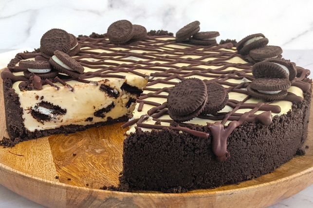

No-bake Oreo cheesecake recipe
3h 25m prep | 10 servings

Description
Using regular and mini Oreo cookies and cream cheese, this easy, no-bake cheesecake tastes just like cookies and cream!
Ingredients
Allergens: Recipe may contain gluten, wheat, milk, lactose and alcohol.
- 3 (133g each) pkts Oreo biscuits
- 80g butter, melted
- 60ml (1/4 cup) boiling water
- 2 tsp gelatine powder
- 500g cream cheese, at room temperature, chopped
- 140g (2/3 cup) caster sugar
- 2 tsp vanilla extract
- 300mls thickened cream
- 50g dark chocolate, melted
- Mini Oreo biscuits, to decorate
Steps
- Line the base and side of a 23cm springform pan with baking paper.
- Cut the biscuits of one packet of Oreos into quarters. Set aside.
- Place the remaining biscuits into a food processor. Process until fine crumbs form. Add the butter and process until combined. Transfer to the prepared pan. Use a straight-sided glass to spread and press the biscuit mixture over the base and side of the pan. Place in the fridge until required.
- Place the boiling water in a small heatproof jug. Sprinkle with gelatine. Use a fork to whisk until the gelatine has dissolved. Set aside to cool slightly.
- Use electric beaters to beat the cream cheese until smooth. Add the sugar and vanilla. Beat until combined. Gradually add the cream. Beat until combined and thickened. Beat in the gelatine mixture until combined. Stir in the quartered biscuits. Spoon the cheesecake mixture into the prepared pan. Place in the fridge for 3 hours or overnight until set.
- Remove the cake from the pan and place on a serving plate. Drizzle with melted chocolate. Serve decorated with mini Oreos.